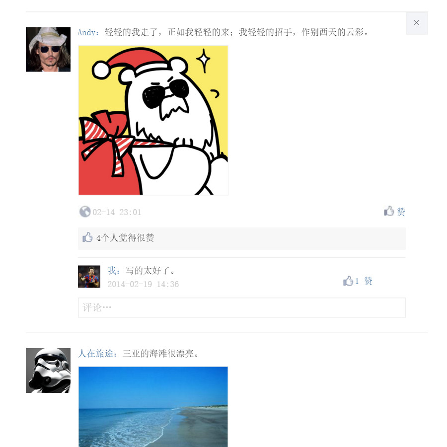

Frank young
Frank Young
主页
前端
服务端
php
python相关
安卓开发
关于我
项目
Right >
首页
原生js实现的一个点赞和评论
原生js实现的一个点赞和评论
作者：Frank 时间：2015-12-27
原生js实现的一个点赞和评论前端demo，（没有后端部分,配合Ajax使用）
1.实现了点赞评论功能
2.取消点赞
3.删除评论
4.给回复点赞
查看效果

←
Older
Newer
→
标签
html
css
javascript
jQuery
React
Angularjs
Vue.js
Node.js
php
yii
python
android